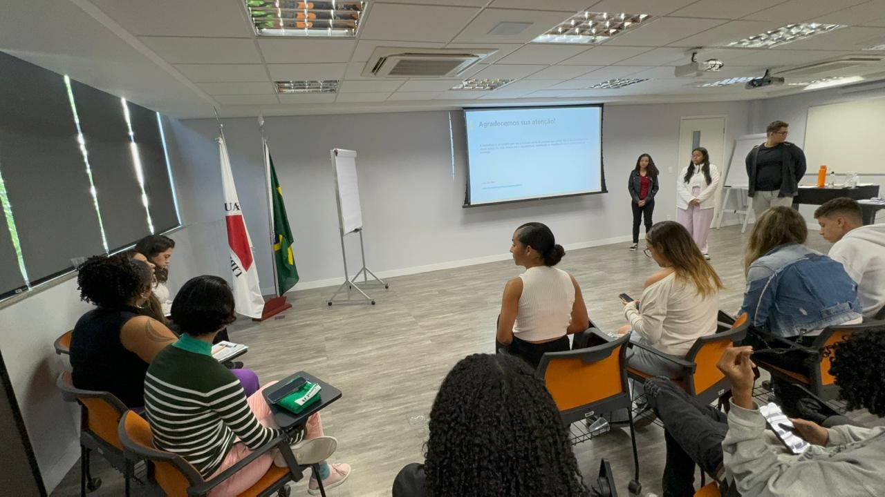

Oi, que bom te ver aqui!
Vou te contar um pouco sobre mim.
Meu nome é Sophia, e de toda a minha apresentação na
página inicial, gostaria de te contar mais algumas coisas
sobre quem eu sou:
Meu nome é Sophia, sou baiana, mas cresci em Minas Gerais.
Estudei no Colégio Sócrates de 2009 a 2015
e depois fui aprovada no Colégio Santa Maria Minas, onde
permaneci até 2022. Atualmente, estou concluindo o
ensino médio no Colégio Cotemig.
Desde pequena, meus pais me incentivaram a ser
empática e a ajudar o próximo, características que hoje
fazem parte essencial da minha personalidade.
Atualmente, participo de dois projetos voluntários na
minha escola: o Code Club e o Amor e Cuidado.
No início de 2024, me envolvi em um projeto fora da escola
chamado Jovens Profissionais, promovido pelo Instituto
Unimed BH. Participei de duas competições, e na primeira,
apresentei nossa ideia de startup chamada VisionEyes,
voltada para a inclusão de pessoas com deficiência visual no
mercado de trabalho. Nosso grupo ficou em primeiro lugar, e
como prêmio, ganhamos ingressos para uma peça no Cine
Theatro Brasil Vallourec.
Além disso, meus colegas me elegeram como representante
de turma da 2E1, o que reforça minha habilidade de interação
com pessoas e liderança.

Projeto Code Club
O Code Club é uma rede global de clubes voluntários que ensinam
programação a crianças de forma gratuita. O projeto tem como
objetivo incentivar o aprendizado de tecnologia desde cedo,
desenvolvendo habilidades de lógica, pensamento crítico e
resolução de problemas. Os clubes oferecem atividades práticas e
lúdicas, onde os alunos criam jogos, animações e websites, sempre
com o apoio de mentores voluntários.
Projeto Code Club
O Code Club é uma rede global de clubes voluntários que ensinam programação a crianças de forma gratuita. O projeto tem como objetivo incentivar o aprendizado de tecnologia desde cedo, desenvolvendo habilidades de lógica, pensamento crítico e resolução de problemas. Os clubes oferecem atividades práticas e lúdicas, onde os alunos criam jogos, animações e websites, sempre com o apoio de mentores voluntários.